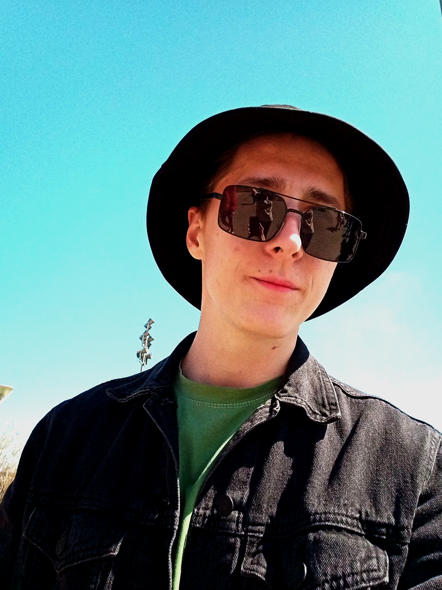

Я учусь на 4 курсе СПБГУПТД, работаю в IT и параллельно развиваюсь в веб-направлении. Мне интересна связка визуальной аккуратности и технической логики: чтобы сайт выглядел современно, быстро загружался и был удобен на мобильных устройствах.
Junior Frontend / Web
Вадим — студент, IT-специалист и начинающий веб-разработчик.
Собираю аккуратные интерфейсы, люблю системность в дизайне и развиваюсь во frontend-разработке: от адаптивной верстки до интерактива на JavaScript.
- Город: Санкт-Петербург
- Фокус: HTML / CSS / JavaScript
- Подход: Mobile First

Вадим
Студент СПБГУПТД · IT · frontend direction
01
О себе
Подход
В работе ценю структуру, чистую верстку, единообразие компонентов и понятную подачу информации.
Цель
Сейчас усиливаю базу по frontend-разработке и собираю портфолио из учебных и практических проектов.
02
Опыт
Работа в IT
настоящее времяПрактический опыт в цифровой среде: работа с техническими задачами, коммуникацией и организацией процессов. Это помогает мне подходить к разработке сайтов не только как к верстке, но и как к решению реальных задач пользователя.
Учебные веб-проекты
2025–2026Создание адаптивных макетов, одностраничных сайтов и интерфейсных блоков с использованием HTML, CSS и JavaScript. Отрабатываю семантику, визуальную систему, адаптивность и базовую интерактивность.
03
Образование
СПБГУПТД
4 курс
Направление связано с цифровой и проектной средой.
Параллельно развиваю навыки веб-разработки и собираю рабочее портфолио.
04
Навыки
Frontend
Подход к работе
Технический профиль
HTML / семантика
85%
CSS / адаптивность
80%
JavaScript / интерактив
65%
05
Проекты
01
HTML / CSS / JavaScriptОбучающая платформа Signal JS
Signal JS — образовательная платформа для диагностики и тренировки знаний по JavaScript.
02
Dashboard / UIИнтерактивный dashboard
Учебный проект с интерфейсными виджетами, блоками статистики, списком задач и визуальной организацией данных. Основа — работа с UI, структурой и интерактивностью.
03
Game / JavaScriptМини-игра
Игровой учебный проект с логикой перемещения, препятствиями и визуальным взаимодействием. Использовался как практика структуры, сценариев поведения и игрового интерфейса.
06
Контакты
Открыт к учебным, проектным и стартовым коммерческим задачам во frontend / web. Готов развиваться дальше, усиливать стек и собирать более сложные интерфейсы.
- Email vadim.test@example.com
- Telegram @Sanset_Sin
- GitHub / Git ссылка на профиль или репозиторий